| Thema | Indicator | Nu | Streefwaarde | Verwacht in doeljaar | Per jaar | Status |
|---|---|---|---|---|---|---|
| Overheidsfinanciën & Openbaar bestuur | EMU-saldo (% BBP) | -1.6 | -3.0 | -2.9 | -0.268 | Doel gehaald |
| Defensie en Ontwikkelingssamenwerking | Uitgaven ontwikkelingssamenwerking (als % BNI) | 0.5 | 0.7 | 0.6 | 0.001 | Te traag |
| Economie & Arbeidsmarkt | R en D uitgaven (% BBP) | 2.4 | 3.0 | 2.5 | 0.025 | Te traag |
| Klimaat en Milieu | Aandeel Natura 2000 dat voldoende onder de Kritische DepositieWaarde (KDW) zit | 29.9 | 50.0 | 31.3 | 0.209 | Te traag |
| Klimaat en Milieu | Broeikasgasemissies (CO2-eq. Mton) | 145.6 | 22.7 | 55.1 | -5.714 | Te traag |
| Klimaat en Milieu | Hernieuwbare energie - eindgebruik (%) | 20.2 | 39.0 | 33.0 | 2.189 | Te traag |
| Klimaat en Milieu | Stikstofdepositie gevoelige natuurgebieden (mol/ha) | 1348.0 | 850.0 | 1116.5 | -18.971 | Te traag |
| Wonen | Dakloosheid (dakloze mensen x 1.000) | 33.0 | 0.0 | 25.2 | -0.820 | Te traag |
| Defensie en Ontwikkelingssamenwerking | Vullingsgraad formatie krijgsmacht (Militair personeel) | 79.5 | 86.7 | 78.4 | -0.350 | Verkeerde richting |
| Kennis & Vaardigheden | Aantallen vroegtijdig schoolverlaters (12-23 jaar) | 34210.0 | 18000.0 | 41206.0 | 2258.000 | Verkeerde richting |
| Zorg | % rokers 12-18 jr. | 7.9 | 0.0 | 17.8 | 0.640 | Verkeerde richting |
| Zorg | Vaccinatiegraad Rijksvaccinatieprogramma zuigelingen (geregistreerde vaccinaties BMR) | 88.8 | 95.0 | 82.2 | -1.191 | Verkeerde richting |
| Zorg | Vaccinatiegraad Rijksvaccinatieprogramma zuigelingen (geregistreerde vaccinaties totaal) | 86.0 | 90.0 | 76.4 | -1.520 | Verkeerde richting |
| Zorg | Voldoende beweging (% bevolking > 4 jr.) | 47.0 | 75.0 | 31.7 | -0.877 | Verkeerde richting |
| Bestaanszekerheid | Armoede intensiteit (% inkomenstekort ten opzichte van de armoedegrens bij de mediaan binnen de groep in armoede) | 19.0 | NA | NA | 2.500 | Alleen richting |
| Bestaanszekerheid | Huishoudens met problematische schulden (%) | 8.6 | NA | NA | 0.223 | Alleen richting |
| Binnenlandse Veiligheid | Aantal geregistreerde misdrijven | 816.0 | NA | NA | 5.571 | Alleen richting |
| Binnenlandse Veiligheid | Aantal opgehelderde misdrijven | 180.0 | NA | NA | -5.857 | Alleen richting |
| Binnenlandse Veiligheid | Ophelderingspercentage misdrijven | 22.0 | NA | NA | -0.907 | Alleen richting |
| Binnenlandse Veiligheid | Slachtoffers traditionele criminaliteit (% bevolking) | 20.0 | NA | NA | 0.725 | Alleen richting |
| Gelijkheid/non-discriminatie | Ervaren discriminatie (% personen 15+) | 12.0 | NA | NA | 0.200 | Alleen richting |
| Gelijkheid/non-discriminatie | Inkomensongelijkheid (Gini-coëfficiënt) | 0.3 | NA | NA | 0.005 | Alleen richting |
| Klimaat en Milieu | Living Planet Index - NL (fauna het land) (1990 = 100) | 69.0 | NA | NA | -1.300 | Alleen richting |
| Klimaat en Milieu | Living Planet Index - NL (fauna zoetwater) | 159.0 | NA | NA | -3.900 | Alleen richting |
| Overheidsfinanciën & Openbaar bestuur | “Rule of Law”-index (rang) | 9.0 | NA | NA | 0.800 | Alleen richting |
| Overheidsfinanciën & Openbaar bestuur | “Rule of Law”-index (score) | 0.8 | NA | NA | -0.003 | Alleen richting |
| Overheidsfinanciën & Openbaar bestuur | Vertrouwen in Tweede Kamer (% met (tamelijk) veel vertrouwen) | 24.6 | NA | NA | -5.069 | Alleen richting |
| Wonen | Woningen tekort (aantal) | 396.0 | NA | NA | 21.886 | Alleen richting |
| Zorg | Gezonde levensverwachting (bij geboorte) - mannen | 64.1 | NA | NA | -0.466 | Alleen richting |
| Zorg | Gezonde levensverwachting (bij geboorte) - vrouwen | 62.0 | NA | NA | -0.806 | Alleen richting |
Wat weten we eigenlijk over de doelen van het Rijk?
71 indicatoren uit Blik op Nederland, met de trend doorgetrokken waar dat kan
Leeswijzer
Deze pagina neemt de indicatoren van de Algemene Rekenkamer en beantwoordt er één vraag bij: halen we het doel, of niet?
Het originele dashboard toont een lijn en een doel naast elkaar, maar laat het daarbij. Hier is de lijn doorgetrokken, op drie manieren:
- waar de dataset van de Rekenkamer zelf te kort is, is de reeks verlengd met cijfers van het CBS, die als de recentste cijfers gelden waar ze de Rekenkamer-data overlappen;
- waar het CPB een officiële raming publiceert, is die toegevoegd als groene stippellijn — de kortetermijnraming (cMEV) voor de eerstkomende jaren, de middellangetermijnverkenning (MLT) voor de jaren daarna;
- waar geen van beide een cijfer geeft, is de trend van de laatste jaren doorgerekend.
Wat de kleuren betekenen staat in de legenda hieronder. Kort: groen is goed nieuws, geel is te langzaam, rood is de verkeerde kant op. Grijs betekent dat er geen doel bekend is om tegen af te zetten — dat geldt voor meer dan de helft van de indicatoren, en dat is zelf al een uitkomst.
Onder elke grafiek staat in één zin wat er aan de hand is: of het doel gehaald wordt, en zo niet, hoe snel de indicator beweegt.
Van de 71 indicatoren heeft er 25 een streefwaarde waaraan je kunt aflezen of het doel gehaald wordt. Bij 43 staat alleen welke kant het op moet, en bij 3 staat ook dat niet. Voor 8 indicatoren heeft de coalitie zich aan een eigen doel verbonden.
Dat is op zichzelf de eerste uitkomst. Voortgang meten kan alleen waar een doel becijferd is; voor de rest blijft het bij de vraag of een indicator de gewenste kant op beweegt. Hieronder staat eerst de kleine groep waar een echt oordeel mogelijk is, daarna de rest.
Doel gehaald Op koers Te traag Verkeerde richting Alleen een richting bekend Geen richting bekend
De onderbroken lijn in een grafiek is de streefwaarde. Waar een tweede, lichtere stippellijn staat, geldt naast de gehanteerde norm nog een ander doel — bij R&D-uitgaven bijvoorbeeld de EU-doelstelling van 3% naast het Nederlandse doel van 2,5%.
Indicatoren met een becijferd doel
Bestaanszekerheid
% personen onder NL-armoedegrens (nieuwe CBS–SCP–Nibud-methode)
3,1
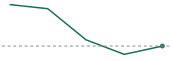
Voldoet aan de norm
Bestaanszekerheid
Kinderarmoede (% kinderen < 18)
2,8% kinderen < 18
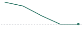
Voldoet aan de norm
Defensie en Ontwikkelingssamenwerking
Investeringsquote defensie uitgaven (% defensie-uitgaven voor investeringen)
30,1
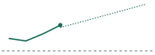
Voldoet aan de norm
Overheidsfinanciën & Openbaar bestuur · CBS-reeks
EMU-saldo (% BBP)
-1,6% BBP
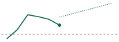
Voldoet aan de norm
Overheidsfinanciën & Openbaar bestuur · CBS-reeks
EMU-schuld (% BBP)
44,7% BBP
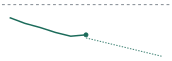
Voldoet aan de norm
Defensie en Ontwikkelingssamenwerking
Defensie uitgaven (NAVO-norm)
2,2NAVO-norm
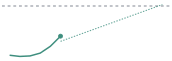
Op koers voor 2035
Klimaat en Milieu
Ammoniak-uitstoot (NH3) (industrie)
1,0industrie
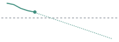
Op koers voor 2035
Klimaat en Milieu
Ammoniak-uitstoot (NH3) (landbouw)
94,9landbouw
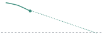
Op koers voor 2035
Klimaat en Milieu
NOx-uistoot (mobiliteit)
122,4mobiliteit
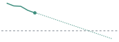
Op koers voor 2035
Defensie en Ontwikkelingssamenwerking
Uitgaven ontwikkelingssamenwerking (als % BNI)
0,5als % BNI
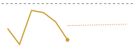
Te traag — beweegt nauwelijks
Economie & Arbeidsmarkt · CBS-reeks
R en D uitgaven (% BBP)
2,4% BBP
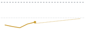
Te traag — stijgt met 0,02 % BBP per jaar
Klimaat en Milieu
Aandeel Natura 2000 dat voldoende onder de Kritische DepositieWaarde (KDW) zit
29,9
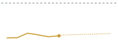
Te traag — stijgt met 0,21 per jaar
Klimaat en Milieu
Broeikasgasemissies (CO2-eq. Mton)
145,6CO2-eq. Mton
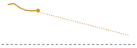
Te traag — daalt met 5,71 CO2-eq. Mton per jaar
Klimaat en Milieu
Hernieuwbare energie - eindgebruik (%)
20,2%
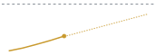
Te traag — stijgt met 2,19 % per jaar
Klimaat en Milieu
Stikstofdepositie gevoelige natuurgebieden (mol/ha)
1.348,0mol/ha
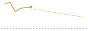
Te traag — daalt met 18,97 mol/ha per jaar
Wonen
Dakloosheid (dakloze mensen x 1.000)
33,0dakloze mensen x 1.000
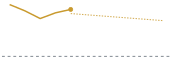
Te traag — daalt met 0,82 dakloze mensen x 1.000 per jaar
Defensie en Ontwikkelingssamenwerking
Vullingsgraad formatie krijgsmacht (Militair personeel)
79,5Militair personeel
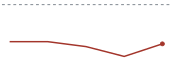
Beweegt van het doel af
Kennis & Vaardigheden
Aantallen vroegtijdig schoolverlaters (12-23 jaar)
34.210,012-23 jaar
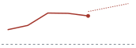
Beweegt van het doel af
Zorg
% rokers 12-18 jr.
7,9
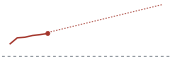
Beweegt van het doel af
Zorg
Vaccinatiegraad Rijksvaccinatieprogramma zuigelingen (geregistreerde vaccinaties BMR)
88,8
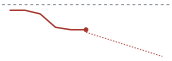
Beweegt van het doel af
Zorg
Vaccinatiegraad Rijksvaccinatieprogramma zuigelingen (geregistreerde vaccinaties totaal)
86,0
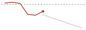
Beweegt van het doel af
Zorg
Voldoende beweging (% bevolking > 4 jr.)
47,0% bevolking > 4 jr.
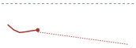
4 jr.)">
Beweegt van het doel af
Kennis & Vaardigheden
Minimaal digitale basisvaardigheden (% personen > 12 jaar)
78,7% personen > 12 jaar
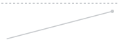
12 jaar)">
Te weinig data
Klimaat en Milieu
Kwaliteit oppervlaktewater (biologisch) (% van goede kwaliteit))
14,6
Te weinig data
Klimaat en Milieu
Kwaliteit oppervlaktewater (chemisch) (% van voldoende kwaliteit))
0,7
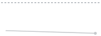
Te weinig data
Indicatoren zonder becijferd doel
Hier valt geen voortgang te meten, alleen beweging. De onderbroken doellijn ontbreekt dan ook.
Bestaanszekerheid
Armoede intensiteit (% inkomenstekort ten opzichte van de armoedegrens bij de mediaan binnen de groep in armoede)
19,0
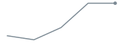
Verkeerde kant op
Bestaanszekerheid
Huishoudens met problematische schulden (%)
8,6%
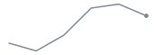
Verkeerde kant op
Binnenlandse Veiligheid
Aantal geregistreerde misdrijven
816,0
Verkeerde kant op
Binnenlandse Veiligheid
Aantal opgehelderde misdrijven
180,0
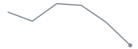
Verkeerde kant op
Binnenlandse Veiligheid
High Impact Crimes x 1.000
103,7
Goede kant op
Binnenlandse Veiligheid
National Cybersecurity Index - NL (ranking)
35,0ranking

Alleen richting
Binnenlandse Veiligheid
National Cybersecurity Index - NL (score)
81,7score
Alleen richting
Binnenlandse Veiligheid
Ophelderingspercentage misdrijven
22,1
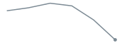
Verkeerde kant op
Binnenlandse Veiligheid
Slachtoffers traditionele criminaliteit (% bevolking)
20,0% bevolking
Verkeerde kant op
Binnenlandse Veiligheid
Slachtoffers van moord en doodslag per 100.000 inwoners
0,7
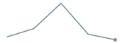
Goede kant op
Economie & Arbeidsmarkt
Arbeidsproductiviteit (toegevoegde waarde per gewerkt uur; index, 2021 = 100)
99,9
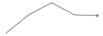
Goede kant op
Economie & Arbeidsmarkt
BBP reële groei
1,1
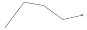
Goede kant op
Economie & Arbeidsmarkt
Concurrentiekracht (World Competitiveness Ranking); rang NL binnen Europa
5,0
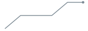
Goede kant op
Economie & Arbeidsmarkt
Netto arbeidsparticipatie (% 15-75-jarigen met betaald werk)
73,2
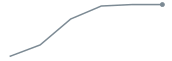
Goede kant op
Economie & Arbeidsmarkt
Werkloosheid (% werkzoekenden 15-75 jaar die direct beschikbaar zijn als percentage van beroepsbevolking)
3,9
Goede kant op
Gelijkheid/non-discriminatie
Ervaren discriminatie (% personen 15+)
12,0% personen 15+
Verkeerde kant op
Gelijkheid/non-discriminatie
Gender-equality index (rang)
5,0rang
Alleen richting
Gelijkheid/non-discriminatie
Gender-equality index (score)
69,5score

Alleen richting
Gelijkheid/non-discriminatie
Inkomensongelijkheid (Gini-coëfficiënt)
0,3Gini-coëfficiënt
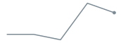
Verkeerde kant op
Gelijkheid/non-discriminatie
Loonkloof man/vrouw (inkomen vrouwen als % van inkomen mannen)
90,3
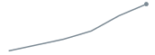
Goede kant op
Gelijkheid/non-discriminatie
Vermogensongelijkheid (Gini-coëfficiënt)
0,7Gini-coëfficiënt
Goede kant op
Gelijkheid/non-discriminatie
Verschil (in jaren) gezonde levensverwachting tussen hoogste en laagste inkomenskwintiel (mannen)
20,8mannen

Alleen richting
Gelijkheid/non-discriminatie
Verschil (in jaren) gezonde levensverwachting tussen hoogste en laagste inkomenskwintiel (vrouwen)
21,7vrouwen
Alleen richting
Kennis & Vaardigheden
PIAAC-scores probleemoplossend vermogen
265,0

Alleen richting
Kennis & Vaardigheden
PIAAC-scores rekenvaardigheid
284,0

Alleen richting
Kennis & Vaardigheden
PIAAC-scores taalvaardigheid
279,0

Alleen richting
Kennis & Vaardigheden
PISA-scores lezen
459,0

Alleen richting
Kennis & Vaardigheden
PISA-scores science
488,0

Alleen richting
Kennis & Vaardigheden
PISA-scores wiskunde
493,0

Alleen richting
Klimaat en Milieu
Living Planet Index - NL (fauna het land) (1990 = 100)
69,01990 = 100
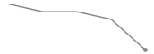
Verkeerde kant op
Klimaat en Milieu
Living Planet Index - NL (fauna zoetwater)
159,0fauna zoetwater
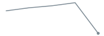
Verkeerde kant op
Overheidsfinanciën & Openbaar bestuur
"Rule of Law"-index (rang)
9,0rang
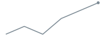
Verkeerde kant op
Overheidsfinanciën & Openbaar bestuur
"Rule of Law"-index (score)
0,8score
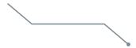
Verkeerde kant op
Overheidsfinanciën & Openbaar bestuur
EMU-saldo (€ mld)
-18,7€ mld
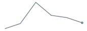
Goede kant op
Overheidsfinanciën & Openbaar bestuur
Totale overheidsuitgaven als % BBP
44,9
Geen richting
Overheidsfinanciën & Openbaar bestuur
Vertrouwen in Tweede Kamer (% met (tamelijk) veel vertrouwen)
24,6
Verkeerde kant op
Wonen
(Mediane) Woonquote (eigenaar)
17,1eigenaar
Goede kant op
Wonen
(Mediane) Woonquote (huurder)
26,4huurder
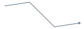
Goede kant op
Wonen
Verdeling woningvoorraad naar eigendom (koop)
4.754,0koop
Geen richting
Wonen
Verdeling woningvoorraad naar eigendom (sociale huur)
2.332,0sociale huur
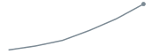
Goede kant op
Wonen
Verdeling woningvoorraad naar eigendom (vrije sectorhuur)
1.181,0vrije sectorhuur
Geen richting
Wonen
Woningen tekort (aantal)
396,0aantal
Verkeerde kant op
Zorg
% rokers > 18 jr.
17,8
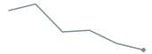
18 jr.">
Goede kant op
Zorg
Gemiddelde wachttijd behandeling ziekenhuis (% langer dan Treeknorm)
42,0% langer dan Treeknorm
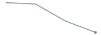
Goede kant op
Zorg
Gezonde levensverwachting (bij geboorte) - mannen
64,1
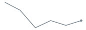
Verkeerde kant op
Zorg
Gezonde levensverwachting (bij geboorte) - vrouwen
62,0
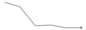
Verkeerde kant op
Waar het misgaat
Hoe hard zijn de doelen?
De Rekenkamer noteert per indicator waar het doel op berust: een wet, een verdrag, een Europese afspraak of alleen beleid. Dat onderscheid bepaalt hoeveel gewicht een gemiste norm heeft.
| Grondslag | Zonder streefwaarde | Met streefwaarde |
|---|---|---|
| Beleidsafspraak | 7 | 4 |
| Internationale afspraak | 5 | 2 |
| Overig | 11 | 6 |
| Wet of verdrag | 22 | 13 |
| NA | 1 | 0 |
Bestaanszekerheid
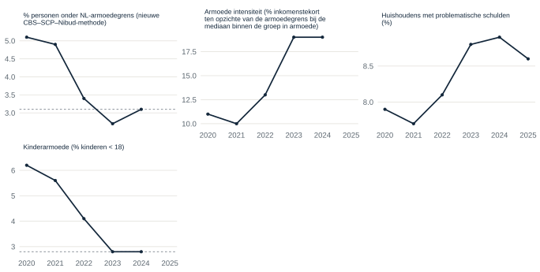
- % personen onder NL-armoedegrens (nieuwe CBS–SCP–Nibud-methode) voldoet aan de norm. - Armoede intensiteit (% inkomenstekort ten opzichte van de armoedegrens bij de mediaan binnen de groep in armoede) heeft geen streefwaarde; de reeks beweegt de verkeerde kant op. - Huishoudens met problematische schulden (%) heeft geen streefwaarde; de reeks beweegt de verkeerde kant op. - Kinderarmoede (% kinderen < 18) voldoet aan de norm.Binnenlandse Veiligheid
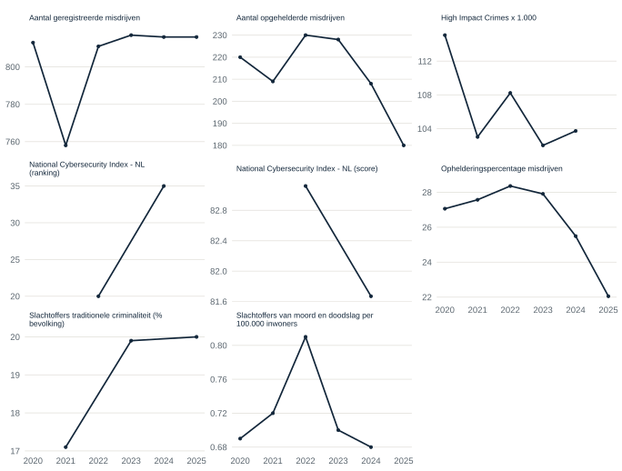
- Aantal geregistreerde misdrijven heeft geen streefwaarde; de reeks beweegt de verkeerde kant op. - Aantal opgehelderde misdrijven heeft geen streefwaarde; de reeks beweegt de verkeerde kant op. - High Impact Crimes x 1.000 heeft geen streefwaarde; de reeks beweegt de goede kant op. - National Cybersecurity Index - NL (ranking): de bron legt geen gewenste richting vast. - National Cybersecurity Index - NL (score): de bron legt geen gewenste richting vast. - Ophelderingspercentage misdrijven heeft geen streefwaarde; de reeks beweegt de verkeerde kant op. - Slachtoffers traditionele criminaliteit (% bevolking) heeft geen streefwaarde; de reeks beweegt de verkeerde kant op. - Slachtoffers van moord en doodslag per 100.000 inwoners heeft geen streefwaarde; de reeks beweegt de goede kant op.Defensie en Ontwikkelingssamenwerking
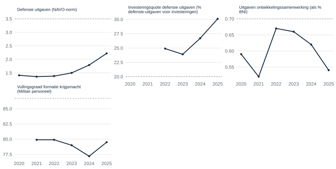
- Defensie uitgaven (NAVO-norm) ligt op koers voor 2035. - Investeringsquote defensie uitgaven (% defensie-uitgaven voor investeringen) voldoet aan de norm. - Uitgaven ontwikkelingssamenwerking (als % BNI) beweegt de goede kant op maar beweegt nauwelijks, te langzaam voor de streefwaarde. - Vullingsgraad formatie krijgsmacht (Militair personeel) beweegt van het doel af.Economie & Arbeidsmarkt
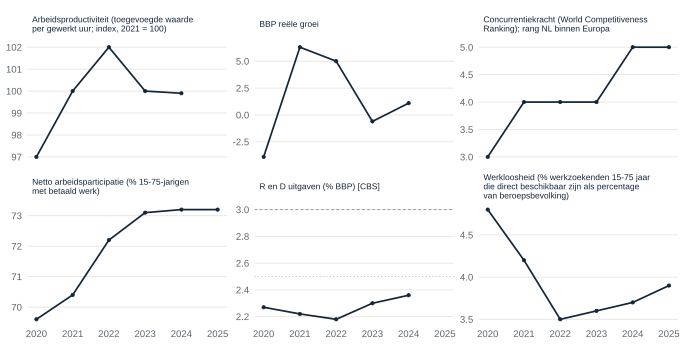
- Arbeidsproductiviteit (toegevoegde waarde per gewerkt uur; index, 2021 = 100) heeft geen streefwaarde; de reeks beweegt de goede kant op. - BBP reële groei heeft geen streefwaarde; de reeks beweegt de goede kant op. - Concurrentiekracht (World Competitiveness Ranking); rang NL binnen Europa heeft geen streefwaarde; de reeks beweegt de goede kant op. - Netto arbeidsparticipatie (% 15-75-jarigen met betaald werk) heeft geen streefwaarde; de reeks beweegt de goede kant op. - R en D uitgaven (% BBP) stijgt met 0,02 % BBP per jaar; te langzaam voor de norm van 3. Naast die norm geldt Nederlands doel (2,5% sinds 2011, EZLI). - Werkloosheid (% werkzoekenden 15-75 jaar die direct beschikbaar zijn als percentage van beroepsbevolking) heeft geen streefwaarde; de reeks beweegt de goede kant op.Gelijkheid/non-discriminatie
- Ervaren discriminatie (% personen 15+) heeft geen streefwaarde; de reeks beweegt de verkeerde kant op. - Gender-equality index (rang): de bron legt geen gewenste richting vast. - Gender-equality index (score): de bron legt geen gewenste richting vast. - Inkomensongelijkheid (Gini-coëfficiënt) heeft geen streefwaarde; de reeks beweegt de verkeerde kant op. - Loonkloof man/vrouw (inkomen vrouwen als % van inkomen mannen) heeft geen streefwaarde; de reeks beweegt de goede kant op. - Vermogensongelijkheid (Gini-coëfficiënt) heeft geen streefwaarde; de reeks beweegt de goede kant op. - Verschil (in jaren) gezonde levensverwachting tussen hoogste en laagste inkomenskwintiel (mannen): de bron legt geen gewenste richting vast. - Verschil (in jaren) gezonde levensverwachting tussen hoogste en laagste inkomenskwintiel (vrouwen): de bron legt geen gewenste richting vast.
Kennis & Vaardigheden
- Aantallen vroegtijdig schoolverlaters (12-23 jaar) beweegt van het doel af. - Minimaal digitale basisvaardigheden (% personen > 12 jaar): de bron legt geen gewenste richting vast. - PIAAC-scores probleemoplossend vermogen: de bron legt geen gewenste richting vast. - PIAAC-scores rekenvaardigheid: de bron legt geen gewenste richting vast. - PIAAC-scores taalvaardigheid: de bron legt geen gewenste richting vast. - PISA-scores lezen: de bron legt geen gewenste richting vast. - PISA-scores science: de bron legt geen gewenste richting vast. - PISA-scores wiskunde: de bron legt geen gewenste richting vast.
Klimaat en Milieu
- Aandeel Natura 2000 dat voldoende onder de Kritische DepositieWaarde (KDW) zit beweegt de goede kant op maar stijgt met 0,21 per jaar, te langzaam voor de streefwaarde. - Ammoniak-uitstoot (NH3) (industrie) ligt op koers voor 2035. - Ammoniak-uitstoot (NH3) (landbouw) ligt op koers voor 2035. - Broeikasgasemissies (CO2-eq. Mton) beweegt de goede kant op maar daalt met 5,71 CO2-eq. Mton per jaar, te langzaam voor de streefwaarde. - Hernieuwbare energie - eindgebruik (%) beweegt de goede kant op maar stijgt met 2,19 % per jaar, te langzaam voor de streefwaarde. - Kwaliteit oppervlaktewater (biologisch) (% van goede kwaliteit)): de bron legt geen gewenste richting vast. - Kwaliteit oppervlaktewater (chemisch) (% van voldoende kwaliteit)): de bron legt geen gewenste richting vast. - Living Planet Index - NL (fauna het land) (1990 = 100) heeft geen streefwaarde; de reeks beweegt de verkeerde kant op. - Living Planet Index - NL (fauna zoetwater) heeft geen streefwaarde; de reeks beweegt de verkeerde kant op. - NOx-uistoot (mobiliteit) ligt op koers voor 2035. - Stikstofdepositie gevoelige natuurgebieden (mol/ha) beweegt de goede kant op maar daalt met 18,97 mol/ha per jaar, te langzaam voor de streefwaarde.
Overheidsfinanciën & Openbaar bestuur
- “Rule of Law”-index (rang) heeft geen streefwaarde; de reeks beweegt de verkeerde kant op. - “Rule of Law”-index (score) heeft geen streefwaarde; de reeks beweegt de verkeerde kant op. - EMU-saldo (% BBP) voldoet aan de norm. - EMU-saldo (€ mld) heeft geen streefwaarde; de reeks beweegt de goede kant op. - EMU-schuld (% BBP) voldoet aan de norm. - Totale overheidsuitgaven als % BBP: de bron legt geen gewenste richting vast. - Vertrouwen in Tweede Kamer (% met (tamelijk) veel vertrouwen) heeft geen streefwaarde; de reeks beweegt de verkeerde kant op.
Wonen
- (Mediane) Woonquote (eigenaar) heeft geen streefwaarde; de reeks beweegt de goede kant op. - (Mediane) Woonquote (huurder) heeft geen streefwaarde; de reeks beweegt de goede kant op. - Dakloosheid (dakloze mensen x 1.000) beweegt de goede kant op maar daalt met 0,82 dakloze mensen x 1.000 per jaar, te langzaam voor de streefwaarde. - Verdeling woningvoorraad naar eigendom (koop): de bron legt geen gewenste richting vast. - Verdeling woningvoorraad naar eigendom (sociale huur) heeft geen streefwaarde; de reeks beweegt de goede kant op. - Verdeling woningvoorraad naar eigendom (vrije sectorhuur): de bron legt geen gewenste richting vast. - Woningen tekort (aantal) heeft geen streefwaarde; de reeks beweegt de verkeerde kant op.
Zorg
- % rokers 12-18 jr. beweegt van het doel af. - % rokers > 18 jr. heeft geen streefwaarde; de reeks beweegt de goede kant op. - Gemiddelde wachttijd behandeling ziekenhuis (% langer dan Treeknorm) heeft geen streefwaarde; de reeks beweegt de goede kant op. - Gezonde levensverwachting (bij geboorte) - mannen heeft geen streefwaarde; de reeks beweegt de verkeerde kant op. - Gezonde levensverwachting (bij geboorte) - vrouwen heeft geen streefwaarde; de reeks beweegt de verkeerde kant op. - Vaccinatiegraad Rijksvaccinatieprogramma zuigelingen (geregistreerde vaccinaties BMR) beweegt van het doel af. - Vaccinatiegraad Rijksvaccinatieprogramma zuigelingen (geregistreerde vaccinaties totaal) beweegt van het doel af. - Voldoende beweging (% bevolking > 4 jr.) beweegt van het doel af.
Alle indicatoren
| Thema | Indicator | Periode | N | Laatste | Eenheid | Doel volgens bron | Status | Bron | Reeks |
|---|---|---|---|---|---|---|---|---|---|
| Bestaanszekerheid | % personen onder NL-armoedegrens (nieuwe CBS–SCP–Nibud-methode) | 2020–2024 | 5 | 3.10 | NA | Niet hoger dan 2024: 3,1% | Doel gehaald | CBS/SCP/Nibud | Rekenkamer |
| Bestaanszekerheid | Armoede intensiteit (% inkomenstekort ten opzichte van de armoedegrens bij de mediaan binnen de groep in armoede) | 2020–2024 | 5 | 19.00 | NA | Lager is beter | Alleen richting | CBS/SCP/Nibud | Rekenkamer |
| Bestaanszekerheid | Huishoudens met problematische schulden (%) | 2020–2025 | 6 | 8.60 | % | Hoe minder hoe beter | Alleen richting | CBS | Rekenkamer |
| Bestaanszekerheid | Kinderarmoede (% kinderen < 18) | 2020–2024 | 5 | 2.80 | % kinderen < 18 | Niet hoger dan 2024: 2,8% | Doel gehaald | CBS/CPB | Rekenkamer |
| Binnenlandse Veiligheid | Aantal geregistreerde misdrijven | 2020–2025 | 6 | 816.00 | NA | Lager # is beter | Alleen richting | CBS/Politie | Rekenkamer |
| Binnenlandse Veiligheid | Aantal opgehelderde misdrijven | 2020–2025 | 6 | 180.00 | NA | Meer opgehelderd is beter (hoger aantal) | Alleen richting | CBS/Politie | Rekenkamer |
| Binnenlandse Veiligheid | High Impact Crimes x 1.000 | 2020–2024 | 5 | 103.73 | NA | Hoe minder hoe beter | Alleen richting | CBS | Rekenkamer |
| Binnenlandse Veiligheid | National Cybersecurity Index - NL (ranking) | 2022–2024 | 2 | 35.00 | ranking | hoe lager het cijfer van de ranking, hoe beter | Alleen richting | e-Governance Academy (Estland) | Rekenkamer |
| Binnenlandse Veiligheid | National Cybersecurity Index - NL (score) | 2022–2024 | 2 | 81.67 | score | Hoe hoger, hoe beter | Alleen richting | e-Governance Academy (Estland) | Rekenkamer |
| Binnenlandse Veiligheid | Ophelderingspercentage misdrijven | 2020–2025 | 6 | 22.05 | NA | hoger % opgehelderd is beter | Alleen richting | CBS/Politie | Rekenkamer |
| Binnenlandse Veiligheid | Slachtoffers traditionele criminaliteit (% bevolking) | 2021–2025 | 3 | 20.00 | % bevolking | Hoe minder hoe beter | Alleen richting | CBS | Rekenkamer |
| Binnenlandse Veiligheid | Slachtoffers van moord en doodslag per 100.000 inwoners | 2020–2024 | 5 | 0.68 | NA | Hoe minder hoe beter | Alleen richting | CBS | Rekenkamer |
| Defensie en Ontwikkelingssamenwerking | Defensie uitgaven (NAVO-norm) | 2020–2025 | 6 | 2.22 | NAVO-norm | 2035: 3,5% BBP | Op koers | Defensie | Rekenkamer |
| Defensie en Ontwikkelingssamenwerking | Investeringsquote defensie uitgaven (% defensie-uitgaven voor investeringen) | 2022–2025 | 4 | 30.10 | NA | > 20% | Doel gehaald | Defensie | Rekenkamer |
| Defensie en Ontwikkelingssamenwerking | Uitgaven ontwikkelingssamenwerking (als % BNI) | 2020–2025 | 6 | 0.54 | als % BNI | 0,007 | Te traag | CBS | Rekenkamer |
| Defensie en Ontwikkelingssamenwerking | Vullingsgraad formatie krijgsmacht (Militair personeel) | 2021–2025 | 5 | 79.50 | Militair personeel | 2025: 86,7% | Verkeerde richting | Defensie | Rekenkamer |
| Economie & Arbeidsmarkt | Arbeidsproductiviteit (toegevoegde waarde per gewerkt uur; index, 2021 = 100) | 2020–2024 | 5 | 99.90 | NA | een hogere indexscore is beter | Alleen richting | CBS | Rekenkamer |
| Economie & Arbeidsmarkt | BBP reële groei | 2020–2024 | 5 | 1.10 | NA | NA | Alleen richting | CBS | Rekenkamer |
| Economie & Arbeidsmarkt | Concurrentiekracht (World Competitiveness Ranking); rang NL binnen Europa | 2020–2025 | 6 | 5.00 | NA | Hogere rang is beter | Alleen richting | IMD | Rekenkamer |
| Economie & Arbeidsmarkt | Netto arbeidsparticipatie (% 15-75-jarigen met betaald werk) | 2020–2025 | 6 | 73.20 | NA | een hoger % is beter | Alleen richting | CBS | Rekenkamer |
| Economie & Arbeidsmarkt | R en D uitgaven (% BBP) | 2013–2024 | 12 | 2.36 | % BBP | 0.03 | Te traag | CBS StatLine 84644NED | CBS |
| Economie & Arbeidsmarkt | Werkloosheid (% werkzoekenden 15-75 jaar die direct beschikbaar zijn als percentage van beroepsbevolking) | 2020–2025 | 6 | 3.90 | NA | een lager % is beter | Alleen richting | CBS | Rekenkamer |
| Gelijkheid/non-discriminatie | Ervaren discriminatie (% personen 15+) | 2021–2025 | 3 | 12.00 | % personen 15+ | Hoe lager, hoe beter | Alleen richting | CBS Veiligheidsmonitor | Rekenkamer |
| Gelijkheid/non-discriminatie | Gender-equality index (rang) | 2025–2025 | 1 | 5.00 | rang | Een hogere positie (lager getal) is beter | Alleen richting | EIGE | Rekenkamer |
| Gelijkheid/non-discriminatie | Gender-equality index (score) | 2020–2025 | 2 | 69.50 | score | Hoe hoger, hoe beter | Alleen richting | EIGE | Rekenkamer |
| Gelijkheid/non-discriminatie | Inkomensongelijkheid (Gini-coëfficiënt) | 2020–2024 | 5 | 0.31 | Gini-coëfficiënt | Hoe lager, hoe beter | Alleen richting | CBS | Rekenkamer |
| Gelijkheid/non-discriminatie | Loonkloof man/vrouw (inkomen vrouwen als % van inkomen mannen) | 2020–2025 | 6 | 90.30 | NA | Een hoger % is beter | Alleen richting | CBS | Rekenkamer |
| Gelijkheid/non-discriminatie | Vermogensongelijkheid (Gini-coëfficiënt) | 2020–2024 | 5 | 0.72 | Gini-coëfficiënt | Hoe lager, hoe beter | Alleen richting | CBS | Rekenkamer |
| Gelijkheid/non-discriminatie | Verschil (in jaren) gezonde levensverwachting tussen hoogste en laagste inkomenskwintiel (mannen) | 2020–2022 | 2 | 20.80 | mannen | Hoe lager/kleiner, hoe beter | Alleen richting | CBS/RIVM | Rekenkamer |
| Gelijkheid/non-discriminatie | Verschil (in jaren) gezonde levensverwachting tussen hoogste en laagste inkomenskwintiel (vrouwen) | 2020–2022 | 2 | 21.70 | vrouwen | Hoe lager/kleiner, hoe beter | Alleen richting | CBS/RIVM | Rekenkamer |
| Kennis & Vaardigheden | Aantallen vroegtijdig schoolverlaters (12-23 jaar) | 2020–2024 | 5 | 34210.00 | 12-23 jaar | Maximum 2026: 18.000 | Verkeerde richting | CBS | Rekenkamer |
| Kennis & Vaardigheden | Minimaal digitale basisvaardigheden (% personen > 12 jaar) | 2021–2023 | 2 | 78.70 | % personen > 12 jaar | Doel 2030: 80% | Te weinig data | CBS | Rekenkamer |
| Kennis & Vaardigheden | PIAAC-scores probleemoplossend vermogen | 2012–2023 | 2 | 265.00 | NA | een hogere score is beter | Alleen richting | OECD | Rekenkamer |
| Kennis & Vaardigheden | PIAAC-scores rekenvaardigheid | 2012–2023 | 2 | 284.00 | NA | een hogere score is beter | Alleen richting | OECD | Rekenkamer |
| Kennis & Vaardigheden | PIAAC-scores taalvaardigheid | 2012–2023 | 2 | 279.00 | NA | een hogere score is beter | Alleen richting | OECD | Rekenkamer |
| Kennis & Vaardigheden | PISA-scores lezen | 2018–2022 | 2 | 459.00 | NA | een hogere score is beter | Alleen richting | OECD | Rekenkamer |
| Kennis & Vaardigheden | PISA-scores science | 2018–2022 | 2 | 488.00 | NA | een hogere score is beter | Alleen richting | OECD | Rekenkamer |
| Kennis & Vaardigheden | PISA-scores wiskunde | 2018–2022 | 2 | 493.00 | NA | een hogere score is beter | Alleen richting | OECD | Rekenkamer |
| Klimaat en Milieu | Aandeel Natura 2000 dat voldoende onder de Kritische DepositieWaarde (KDW) zit | 2020–2025 | 6 | 29.90 | NA | Doel 2030: 50%; 2035: 74% | Te traag | RIVM/PBL/CLO | Rekenkamer |
| Klimaat en Milieu | Ammoniak-uitstoot (NH3) (industrie) | 2020–2024 | 5 | 1.05 | industrie | 2035: 0,7 | Op koers | RIVM | Rekenkamer |
| Klimaat en Milieu | Ammoniak-uitstoot (NH3) (landbouw) | 2020–2024 | 5 | 94.91 | landbouw | 2035: 62,6 (42%) | Op koers | RIVM | Rekenkamer |
| Klimaat en Milieu | Broeikasgasemissies (CO2-eq. Mton) | 2020–2025 | 6 | 145.60 | CO2-eq. Mton | 2040: -90% t.o.v. 1990 = 22,7 | Te traag | CBS | Rekenkamer |
| Klimaat en Milieu | Hernieuwbare energie - eindgebruik (%) | 2020–2024 | 5 | 20.18 | % | Doel 2030: 39% | Te traag | CBS | Rekenkamer |
| Klimaat en Milieu | Kwaliteit oppervlaktewater (biologisch) (% van goede kwaliteit)) | 2021–2024 | 2 | 14.63 | NA | Doel 2027: 100% | Te weinig data | CBS | Rekenkamer |
| Klimaat en Milieu | Kwaliteit oppervlaktewater (chemisch) (% van voldoende kwaliteit)) | 2021–2024 | 2 | 0.67 | NA | Doel 2027: 100% | Te weinig data | CBS | Rekenkamer |
| Klimaat en Milieu | Living Planet Index - NL (fauna het land) (1990 = 100) | 2020–2024 | 5 | 69.00 | 1990 = 100 | een hoger indexgetal is beter | Alleen richting | CBS | Rekenkamer |
| Klimaat en Milieu | Living Planet Index - NL (fauna zoetwater) | 2020–2024 | 5 | 159.00 | fauna zoetwater | een hoger indexgetal is beter | Alleen richting | CBS | Rekenkamer |
| Klimaat en Milieu | NOx-uistoot (mobiliteit) | 2020–2024 | 5 | 122.41 | mobiliteit | 2035: 80,6 | Op koers | RIVM | Rekenkamer |
| Klimaat en Milieu | Stikstofdepositie gevoelige natuurgebieden (mol/ha) | 2020–2025 | 6 | 1348.00 | mol/ha | Doel 2035: 850 mol/ha | Te traag | RIVM | Rekenkamer |
| Overheidsfinanciën & Openbaar bestuur | “Rule of Law”-index (rang) | 2020–2025 | 6 | 9.00 | rang | een lagere rang (getal) is beter | Alleen richting | World Justice Project | Rekenkamer |
| Overheidsfinanciën & Openbaar bestuur | “Rule of Law”-index (score) | 2020–2025 | 6 | 0.82 | score | een hogere score is beter | Alleen richting | World Justice Project | Rekenkamer |
| Overheidsfinanciën & Openbaar bestuur | EMU-saldo (% BBP) | 1995–2025 | 31 | -1.60 | % BBP | niet lager dan -3% | Doel gehaald | CBS StatLine 84118NED | CBS |
| Overheidsfinanciën & Openbaar bestuur | EMU-saldo (€ mld) | 2020–2025 | 6 | -18.70 | € mld | NA | Alleen richting | CBS | Rekenkamer |
| Overheidsfinanciën & Openbaar bestuur | EMU-schuld (% BBP) | 1995–2025 | 31 | 44.70 | % BBP | max. 60% | Doel gehaald | CBS StatLine 84118NED | CBS |
| Overheidsfinanciën & Openbaar bestuur | Totale overheidsuitgaven als % BBP | 2020–2025 | 6 | 44.90 | NA | NA | Geen richting | CBS | Rekenkamer |
| Overheidsfinanciën & Openbaar bestuur | Vertrouwen in Tweede Kamer (% met (tamelijk) veel vertrouwen) | 2020–2025 | 6 | 24.60 | NA | een hoger % is beter | Alleen richting | CBS | Rekenkamer |
| Wonen | (Mediane) Woonquote (eigenaar) | 2020–2023 | 4 | 17.10 | eigenaar | Lager is beter | Alleen richting | CBS | Rekenkamer |
| Wonen | (Mediane) Woonquote (huurder) | 2020–2023 | 4 | 26.40 | huurder | Lager is beter | Alleen richting | CBS | Rekenkamer |
| Wonen | Dakloosheid (dakloze mensen x 1.000) | 2020–2024 | 5 | 33.00 | dakloze mensen x 1.000 | 2030: nul daklozen | Te traag | NA | Rekenkamer |
| Wonen | Verdeling woningvoorraad naar eigendom (koop) | 2020–2025 | 6 | 4754.00 | koop | NA | Geen richting | CBS | Rekenkamer |
| Wonen | Verdeling woningvoorraad naar eigendom (sociale huur) | 2020–2025 | 6 | 2332.00 | sociale huur | Meer is beter | Alleen richting | CBS | Rekenkamer |
| Wonen | Verdeling woningvoorraad naar eigendom (vrije sectorhuur) | 2020–2025 | 6 | 1181.00 | vrije sectorhuur | NA | Geen richting | CBS | Rekenkamer |
| Wonen | Woningen tekort (aantal) | 2020–2025 | 6 | 396.00 | aantal | Lager tekort is beter | Alleen richting | CBS/SBF | Rekenkamer |
| Zorg | % rokers 12-18 jr. | 2020–2025 | 6 | 7.90 | NA | 2040: 0% (12-25jr.) | Verkeerde richting | RIVM/CBS | Rekenkamer |
| Zorg | % rokers > 18 jr. | 2020–2025 | 6 | 17.80 | NA | NA | Alleen richting | NA | Rekenkamer |
| Zorg | Gemiddelde wachttijd behandeling ziekenhuis (% langer dan Treeknorm) | 2022–2025 | 4 | 42.00 | % langer dan Treeknorm | een lager % is beter | Alleen richting | Nza | Rekenkamer |
| Zorg | Gezonde levensverwachting (bij geboorte) - mannen | 2020–2025 | 6 | 64.10 | NA | een hogere leeftijd is beter | Alleen richting | RIVM/CBS | Rekenkamer |
| Zorg | Gezonde levensverwachting (bij geboorte) - vrouwen | 2020–2025 | 6 | 62.00 | NA | een hogere leeftijd is beter | Alleen richting | RIVM/CBS | Rekenkamer |
| Zorg | Vaccinatiegraad Rijksvaccinatieprogramma zuigelingen (geregistreerde vaccinaties BMR) | 2020–2025 | 6 | 88.80 | NA | Minimaal 95% | Verkeerde richting | NA | Rekenkamer |
| Zorg | Vaccinatiegraad Rijksvaccinatieprogramma zuigelingen (geregistreerde vaccinaties totaal) | 2020–2025 | 6 | 86.00 | NA | Minimaal 90% | Verkeerde richting | RIVM | Rekenkamer |
| Zorg | Voldoende beweging (% bevolking > 4 jr.) | 2020–2025 | 6 | 47.00 | % bevolking > 4 jr. | 2040: minimaal 75% (4-17 jr.) | Verkeerde richting | RIVM/CBS | Rekenkamer |
Cijfers uit de dataset Blik op Nederland: Dashboard Doelen en Resultaten van de Algemene Rekenkamer, beschikbaar onder CC0 1.0 Universal. De bron bevat metingen voor 2012, 2018 en 2020 tot en met 2025; de mediane indicator heeft vijf metingen. Voor enkele indicatoren is de reeks verlengd met CBS StatLine; die zijn gemarkeerd met “CBS-reeks” en lopen verder terug. Waar beide bronnen een jaar bevatten, is het CBS-cijfer aangehouden, omdat CBS herzieningen doorvoert die de Rekenkamer-publicatie nog niet bevat. Trends zijn lineaire schattingen over de laatste tien jaar en zijn een doorrekening van het verleden, geen prognose. Er wordt bewust geen jaartal genoemd waarop een doel bereikt zou worden: bij een vrijwel vlakke reeks levert die berekening een willekeurig ver jaartal op. In plaats daarvan staat de verandering per jaar vermeld. Ramingen komen uit de concept-Macro Economische Verkenning 2027 van het CPB (14 augustus 2026) en zijn als groene stippellijn weergegeven; een raming is beleidsafhankelijk en wordt periodiek bijgesteld. De streefwaarden zijn afgeleid uit de vrije tekst van de bron en waar nodig handmatig aangevuld; die interpretatie is van de makers van deze pagina, niet van de Algemene Rekenkamer.